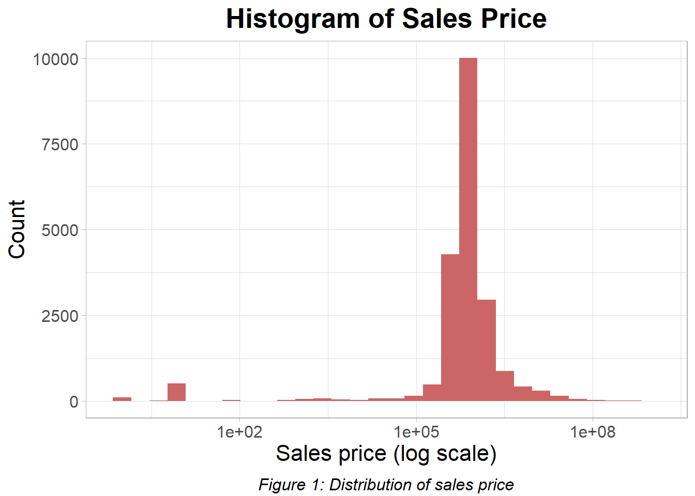
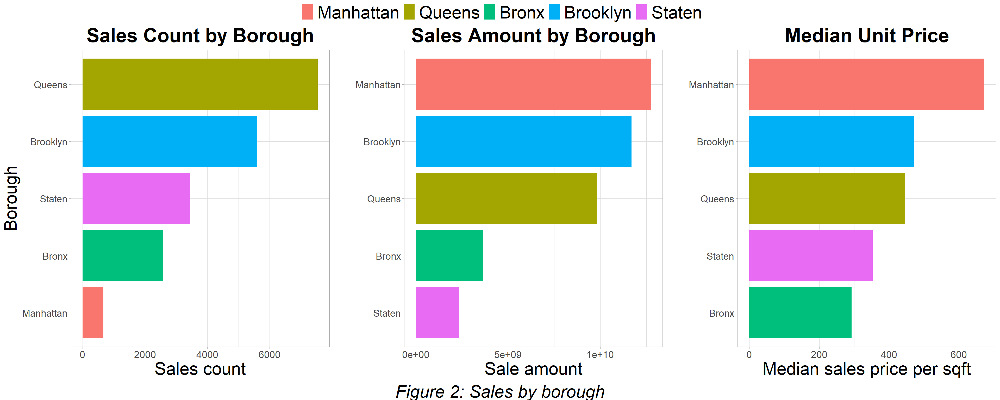
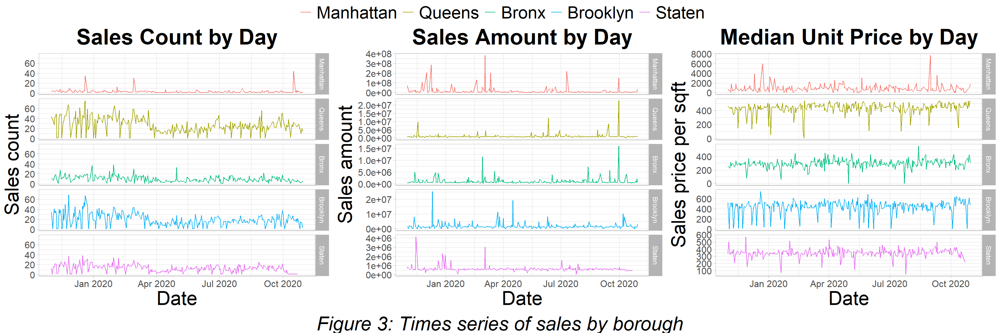
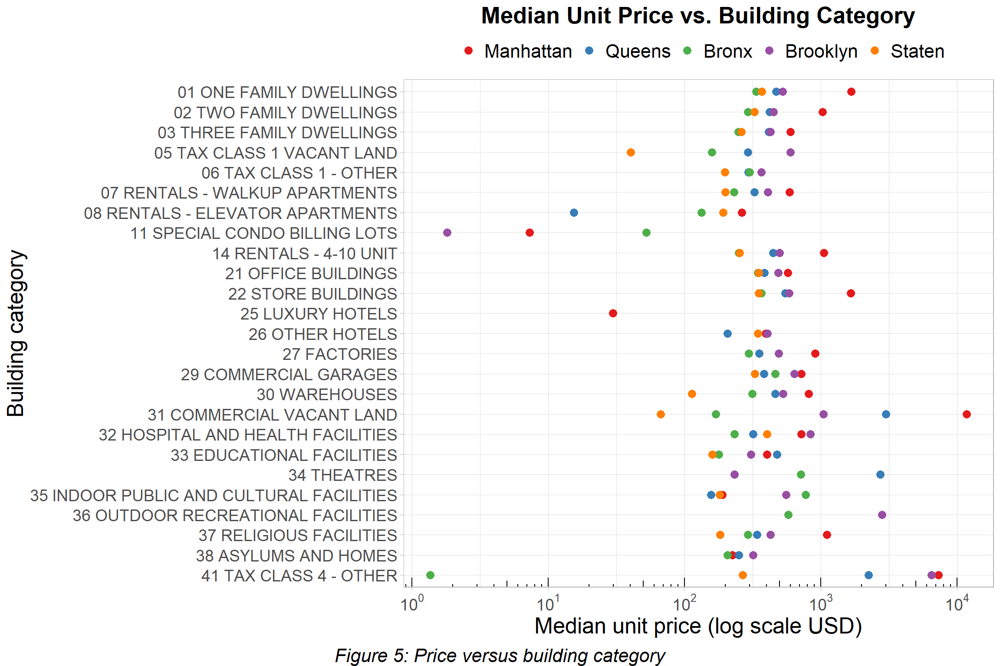
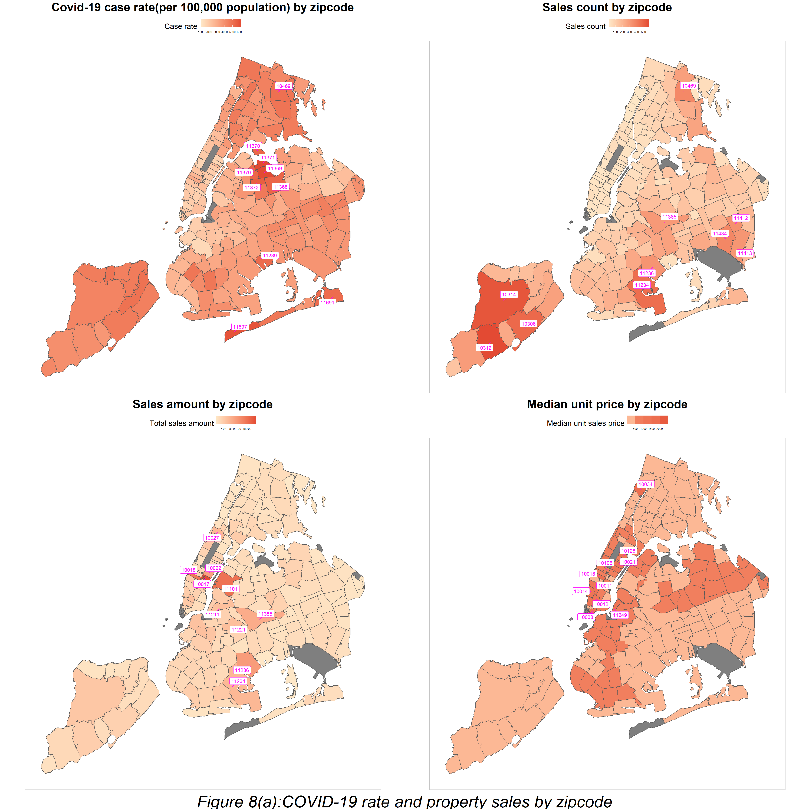
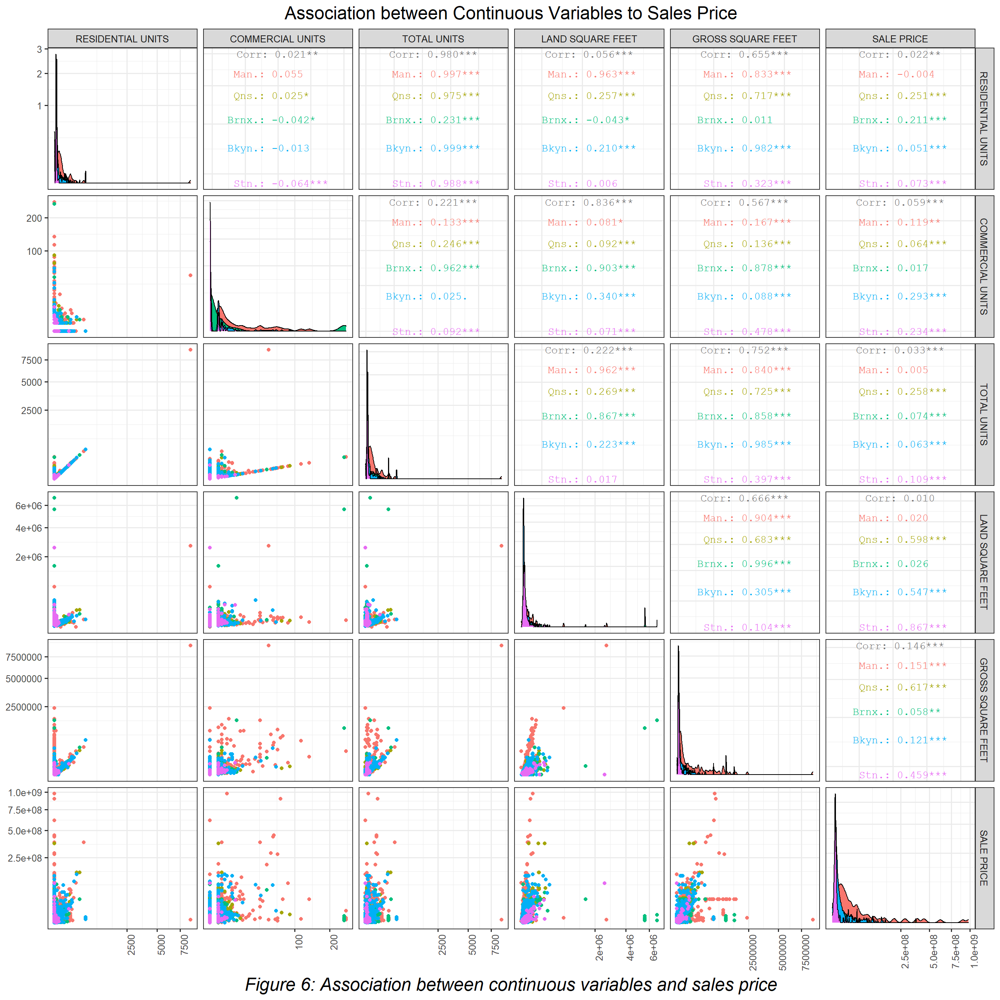

Chapter 5 Results
Section 5.1 Association among variables
When we looked into the percentage of properties that had their tax or building class changed after sales, we observed from the left plot that around 10% properties experienced tax class change after sales and few properties experienced building class change.
We would like to see if the sales price of these properties is different from the others, so we drew a boxplot of the sales price distribution, and grouped it by whether or not the properties experienced class change.
The first plot on the right is the original boxplot. We observed that the group with tax class change don’t have outliers with extreme high sales price, compared to the group without tax class change. The observation may be resulted from the difference between sample size, or from other reasons that we don’t know yet.
Due to the long tail constructed by outliers, we can barely see the inter-quartile range. Therefore, we zoomed in the original plot in the second boxplot, and found that compared to properties without tax class change, those with tax class change usually have higher sales prices.

Then we tried to figure out how the number of units and square feet of property impact its sales price, so we plotted a scatter plot matrix colored by the borough for finding the correlations.
The result shows that the number of units, either residential units or commercial units, or both of them, does not have a significant positive correlation to the sales price. On the other hand, the sales price is related to the square feet, but only in several boroughs. In Queens and Staten, both the gross square feet and the land square feet are positively correlated to the sales price. In Brooklyn, only the land square feet is positively correlated to the sales price. The observation is actually pretty counter-intuitive, since we in general believe that sales price should be proportional to the square feet. The reason behind the low correlation values between sales price and square feet for other boroughs might be the huge difference in unit price between neighborhoods in one borough. Recall that when we research the top 20 most expensive neighborhood, most of them are from Manhattan or Brooklyn. For Bronx, since it does not have a number of expensive neighborhoods, another guess is that since Bronx has the lowest median unit price among all boroughs, and the cheapest family dwellings, the sales prices of most properties in the area are generally low regardless of the square feet.

Section 5.2. COVID-19 and property sales in NYC
We observe that both the sales count and the sales amount of 2020 are in general lower compared to those of the year 2019 despite both of them starts off higher in 2020 when the COVID-19 barely began to spread in NYC(shown in figure 7(a)). As COVID-19 cases surge from the middle of March, we observe an evident decrease in both sales count and sales amount. And although later trends are not as obvious as the sudden drop in mid March, the sales count display an opposite trend compared to the COVID-19 cases trend. Such an assocaition is also observed with sales amount but even less obvious.

 From figure 7(b), we observe that most days fewer than 1,000 COVID-19 cases(to be specific, out of the 203 days in the record, 147 days have lower or equal to 1,000 COVID-19 cases). Most days with relatively fewer COVID-19 cases(below 1,000 cases) have between 50 to 100 property sales. The sales count for days with relatively fewer COVID-19 cases are more widely spread compared to those days with more cases. Also, we observe a weak negative assocaition between COVID-19 case counts and sales count as days with more cases tend to have lower property transactions counts. In terms of sales amount, it is quite stable across days with different COVID-19 cases counts; although we do observe taht several days with relatively fewer COVID-19 cases have extremly high sales amount campared to other days,which is not observed during days with much more cases.
A Pearson correlation test suggests a statistical significant negative correlation(-0.15) between COVID-19 case count and property sales count(p-value of 0.03<0.05). However, the correlation between COVID-19 case count and sales amount is not statistical significant according to the Pearson correlation test.Such findings corraobates our observations in the times series plot.
Figure 8(a) shows COVID-19 case rate per 100,000 people and property sales by record where the top ten zipcodes are highlighted. Zipcodes with top ten highest sales counts are located in Queens, Brooklyn, Bronx and Staten Island. And in general these zipcodes are on the side of their boroughs that are further from Manhattan. Indeed we can observe a pattern that zipcodes further from Manhattan in general have higher sales count. Zipcodes with the highest median uint sales price are mostly located in Manhattan, with the exception of 11249 in Brooklyn and 10034 in Bronx. The zipcode with the highest median unit sales price is 10105 in Manhattan; its median unit price is 8915.551 USD per square feet, while all other zipcodes have median unit price below 2,000 USD per square feet. In fact, there is only one transaction of commercial vacant land in 10105 which has a extreme high unit price. On the other hand, the fact that 10034 in Bronx being the third most expensive zipcode is quite suprising, based on our previous findings. A closer examination of the zipcode shows that there are only 4 property transactions in 10034 and there are two property sales(one commericial garages and religious facilities) with very high unit price and thus drove up the median unit price. As for sales amount, zipcodes with high sales amount can be divided into two groups. The first group is mostly price driven(such as 10017,10018 in Manhattan) where typically properties in these zipcodes tend to have high unit prices but but the sales count of these zipcodes are fairly low. The second group is quantity driven(such as 11234 and 11236 in Queens); these zipcodes have lower unit prices but they have fairly large sales count.

 Figure 8(b) has a clearer display of the association between COVID-19 case rate and property sales by zipcode. According to Figure 8(b), most zipcodes have COVID-19 cases rate between 2,000 to 6,000(out of 100,000). We observe a positive association between COVID-19 cases rate and property sales counts in the scatterplot of Figure 8(b). According to the Pearson correlation test, the COVID-19 case rate of a zipcode is positively associatied with the sales count within that zipcode; the correlation between the two is 0.5021585 and such association is statistical significant(p-value < 2.2e-16).On the other hand, the Pearson correlation test suggests a statistical significant mild negative assocaition (correlation -0.43 and p-value 8.392e-10) between COVID-19 case rate and median unit price; such an negative assocaition can also be observed from the scatterplot. The correlation between COVID-19 case rate and sales amount is not statistical significant.
In a word, zipcodes with higher COVID-19 case rate tend to have higher sales count but lower median unit sales price. Related to the real word situation, such a pattern might indicates an area of lower economic level. However, it is too early to draw any conclusion like that during the phase of exploratory analyis and therefore further analysis is required.